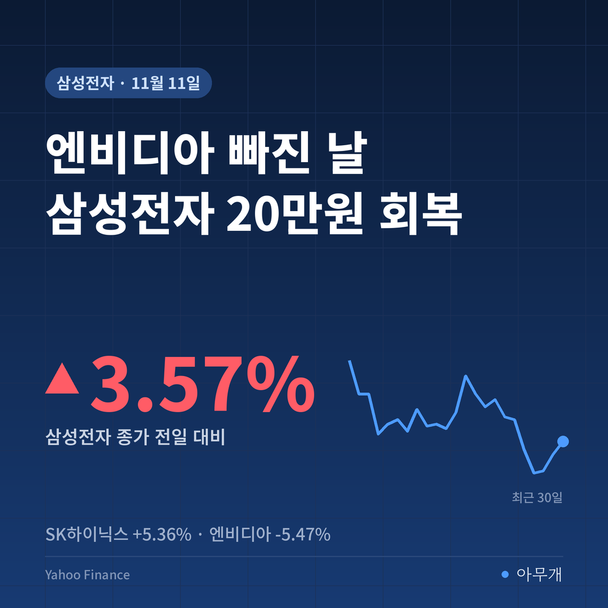
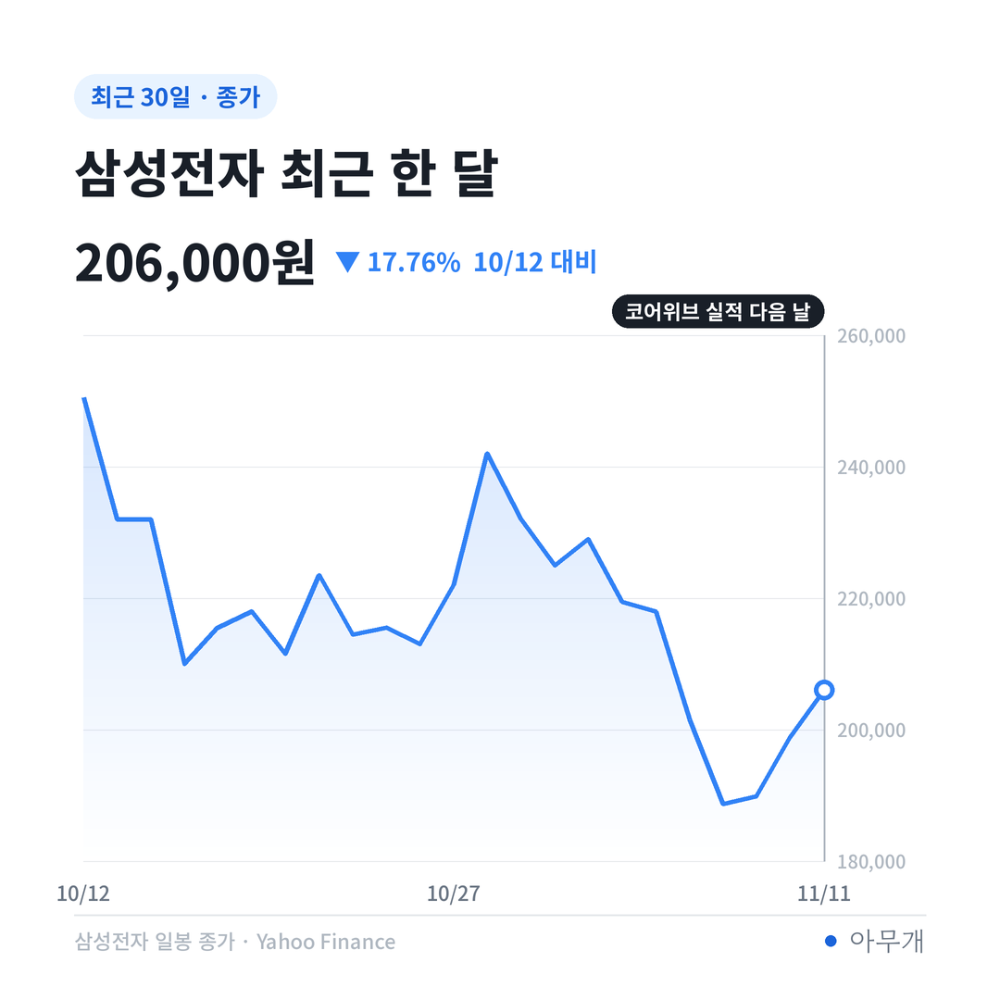
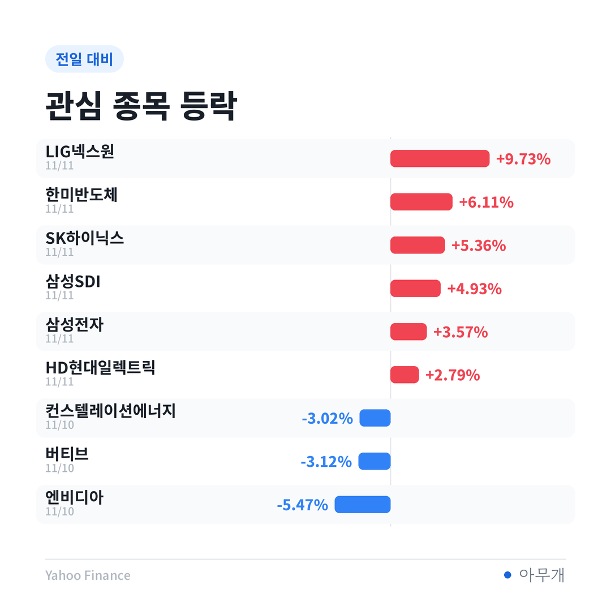
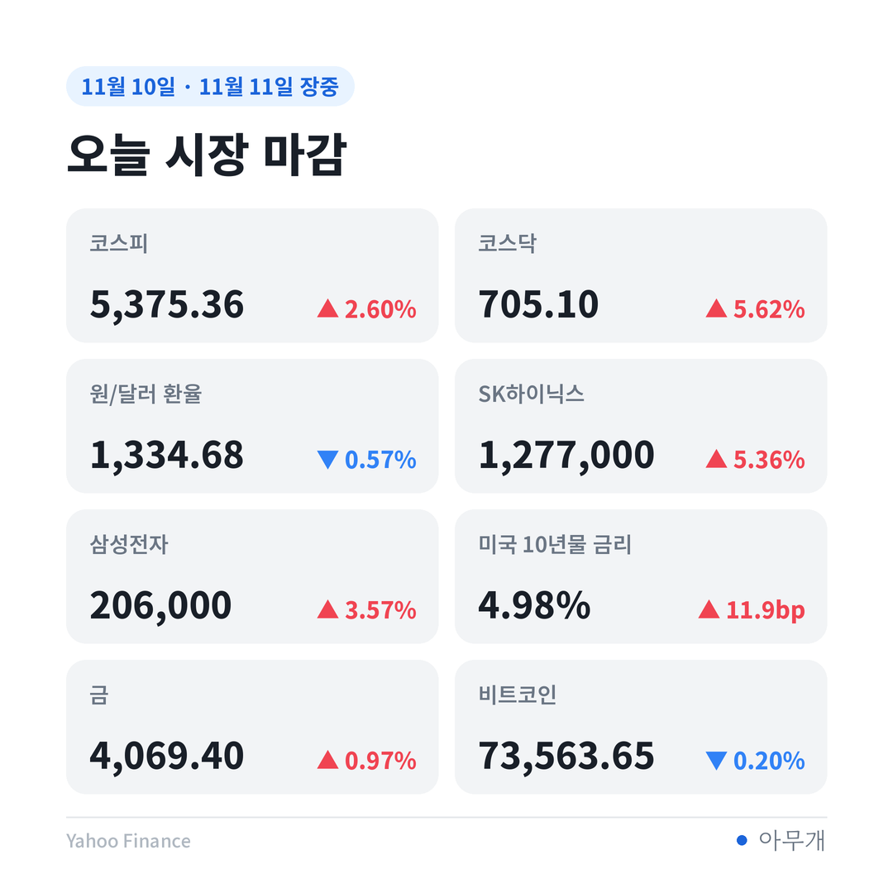

📷 사진 1 자리
어제 놓친 20만원, 오늘은 지켰다
어제 오후 글에서 삼성전자가 장중 20만원을 넘겼다가 198,900원으로 끝났다는 얘기를 했어요. 오늘은 반대였어요. 0.90% 내린 197,100원으로 출발해 196,300원까지 밀렸다가 206,000원으로 마감했죠[1]. 장중 저점에서 종가까지 4.94% 오른 셈이에요.
📷 사진 2 자리
삼성전자가 20만원 위에서 장을 마친 건 5일 이후 4거래일 만이에요[3]. 코스피도 2.60% 올라 5,375.36에 마감했고, 코스닥은 5.62% 올라 705.10으로 700선을 되찾았어요[3][4].
| 날짜 | 무슨 일 |
|---|---|
| 11월 10일(미국) | 10월 CPI 0.4% 상승, 연준 월러 이사 빅스텝 언급[1] |
| 11월 10일(미국 장 마감 뒤) | 코어위브 3분기 매출 36억6천만 달러, 예상치 웃돌고 연간 전망 상향[1][2] |
| 11월 11일(한국) | 코스피 하락 출발 뒤 오전 중 상승 전환, 2.60% 상승 마감[4] |
| 11월 19일(예정) | 앤트로픽 나스닥 상장[5] |
엔비디아의 손님이 내놓은 성적표
엔비디아가 5.47% 빠진 이유와 국내 반도체가 오른 이유는 서로 다른 이야기예요. 엔비디아를 누른 건 젠슨 황 CEO를 둘러싼 의혹과 조사, 즉 '공급하는 회사의 경영 리스크'였어요[2]. 반면 오늘 국내 반도체를 끌어올린 건 '칩을 사 가는 쪽의 수요'를 확인시켜 준 숫자였어요.
코어위브는 엔비디아 GPU(그래픽처리장치)를 대량으로 사들여 AI 회사에 빌려주는 업체예요[2]. 3분기 매출 36억6천만 달러는 시장 예상치(35억 달러대 중반)를 넘었고, 올해 매출 전망도 130억 달러에서 133억 달러로 올렸어요[1][2]. 인트레이터 CEO는 수요가 공급보다 많고 새 계약 가격도 오르고 있다고 말했어요[4][2]. 실제로 GPU 임대 가격을 올려 왔다는 점도 함께 밝혔죠[2][7].
메모리 회사 입장에서 중요한 건 엔비디아 CEO가 누구냐보다 AI 서버가 계속 깔리느냐예요. 서버가 늘면 HBM(고대역폭 메모리)과 D램이 같이 팔리기 때문이에요. 그래서 공급사 리스크가 남아 있는 날에도, 고객사 수요가 확인되자 SK하이닉스와 한미반도체가 각각 5.36%, 6.11% 올랐어요.
📷 사진 3 자리
| 구분 | 확인된 것 | 아직 모르는 것 |
|---|---|---|
| 코어위브 | 3분기 매출 예상 상회, 연간 전망 상향[1][2] | 늘어난 이자 부담을 감당할 수익성[2] |
| 엔비디아 | CEO가 조사 대상에 오름[2], 주가 5.47% 하락 | 조사 결과와 CEO 거취[2] |
| 앤트로픽 | 희망 공모가 70~78달러[5][6] | 최종 공모가(18일 확정)와 상장 첫날 수요[5] |
금리는 올랐는데, 누가 샀나
오늘 반등은 나쁜 소식을 안고 이뤄졌어요. 미국 10년물 금리는 하루 새 11.9bp(0.119%포인트) 올라 4.983%가 됐고, 필라델피아 반도체지수도 0.35% 내렸어요. 보통이면 국내 성장주에 부담이 되는 조합이에요.
📷 사진 4 자리
그런데도 오른 건 외국인 덕분이었어요. 외국인은 지난달 30일부터 9일까지 7거래일 연속 팔다가 10일 4,440억원, 오늘 6,587억원을 사들이며 이틀 연속 순매수했어요[1][3]. 개인은 7,156억원, 기관은 4,816억원을 순매도했고요[1].
외국인 순매수 6,587억원 가운데 삼성전자가 5,375억원으로, 약 82%가 한 종목에 몰렸어요[1]. 오늘 지수 반등은 넓게 퍼진 매수라기보다 반도체 대형주로 돈이 들어온 결과에 가까워요.
국내 투자자에게는: 이틀 반등이 지운 것과 못 지운 것
이틀 반등으로 회복한 폭과 아직 남은 낙폭을 같이 보면 위치가 보여요. 삼성전자는 6일 종가 188,700원에서 오늘까지 9.17% 올랐지만, 11월 2일 종가 229,000원보다는 여전히 10.04% 낮아요. SK하이닉스도 6일 1,132,000원에서 12.81% 올랐는데, 2일 1,472,000원보다는 13.25% 아래예요.
환율도 함께 볼 만해요. 원/달러 환율은 오후 장중 1,334.68원으로 0.57% 내렸어요. 외국인이 주식을 살 때 원화를 사야 하니, 외국인 매수가 이어지는 날에는 환율이 내려가는 쪽으로 힘이 실려요. 환전을 앞둔 분이라면 외국인 수급과 환율을 같이 보는 게 도움이 돼요.
내일 장을 가를 장면들
| 시나리오 | 무엇을 보면 되나 | 예상되는 영향 |
|---|---|---|
| AI 수요 확인이 이어짐 | 12일 네비우스 실적, 앤트로픽 공모가 상향 여부[2][5] | 반도체 대형주 외국인 매수 지속 가능 |
| 금리 부담이 다시 커짐 | 12일 미국 30년물 입찰, 13일 10월 PPI | 성장주 밸류에이션 부담, 반등폭 축소 가능 |
| 엔비디아 리스크 재부각 | 이사회 조사 결과, CEO 거취 보도 | 코어위브 등 엔비디아 의존 업체까지 흔들릴 수 있음 |
오늘 시장은 '엔비디아라는 회사'와 'AI 서버 수요'를 따로 계산하기 시작한 것 같아요. 메모리 입장에서는 누가 GPU를 만들든 서버가 늘면 팔 곳이 생기니, 공급사 리스크보다 고객사 실적을 더 크게 본 거죠. 다만 외국인 매수가 삼성전자 한 종목에 이렇게 쏠린 건 반등의 폭이 아직 좁다는 뜻이기도 해요.
✍️ 직접 보거나 들은 경험이 있으면 위 문단에 한두 줄 덧붙이세요 (이 안내 줄은 지우기)
반대로 볼 근거도 분명해요. 조선일보 보도에 따르면 코어위브의 3분기 순이자비용은 8억4,600만 달러로 영업이익 2억700만 달러의 약 4.1배였어요[2]. 수요가 강해도 빚을 내서 짓는 구조라면 금리가 오를수록 버티기 어렵고, 코어위브는 장비와 자금 모두 엔비디아에 크게 기대고 있어요[2]. 19일 앤트로픽 상장을 앞두고 청약 자금을 마련하려는 매도가 기존 AI·반도체주에 부담이 될 수 있다는 증권가 지적도 있어요[5].
달력에 적어 둘 것
참고한 기사
이 글은 정보 제공 목적이며 투자 권유가 아닙니다. 투자 판단과 책임은 본인에게 있습니다.
수치 출처: Yahoo Finance(종가 기준, 원/달러 환율은 11월 11일 오후 장중), 연합뉴스·조선일보 보도.



